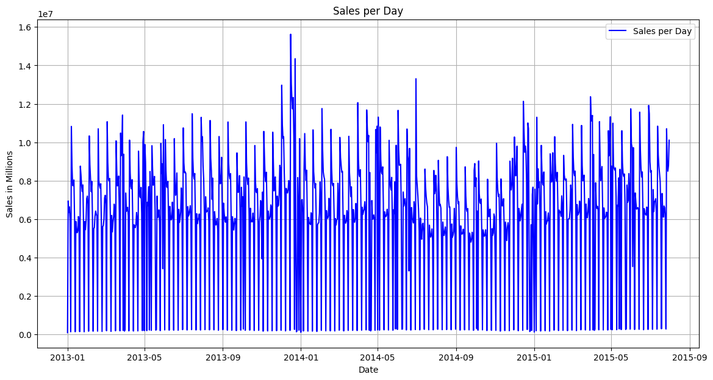
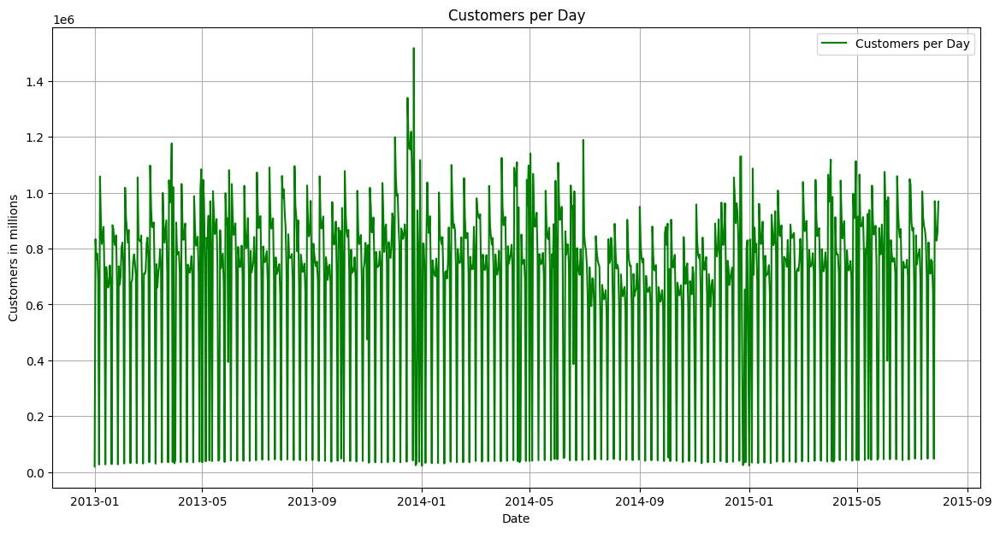
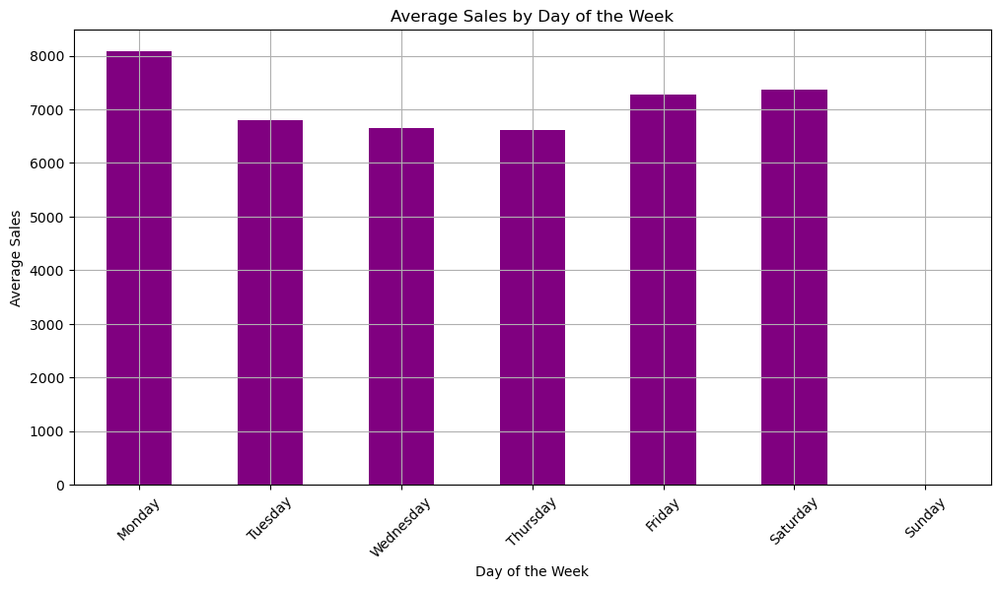
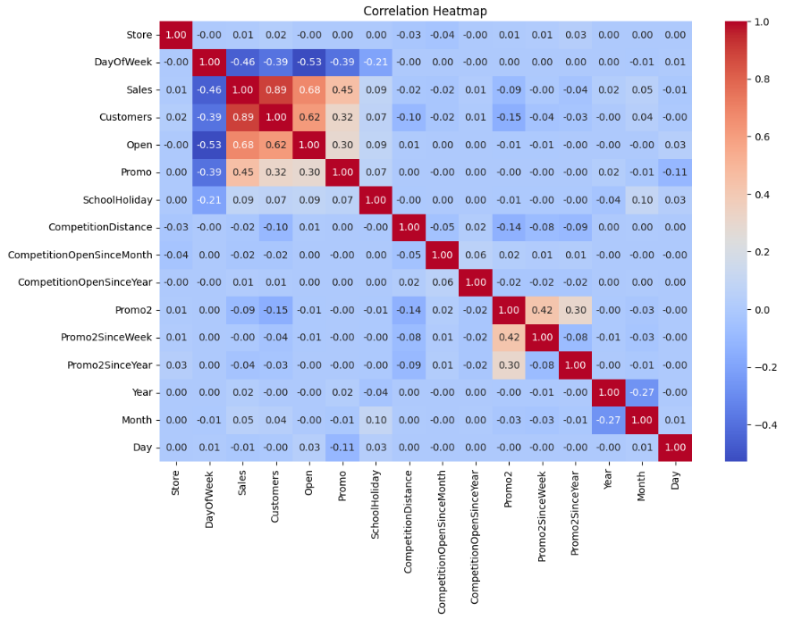

3. EDA
Store sales are influenced by many factors including:
- Promotions
- Holidays
- Competition
- Seasonality
- Locality
Sales vs Customers Comparison:

The graph is a scatter plot showing the relationship between the number of customers (x-axis) and sales (y-axis).
Key Points:
- Positive Correlation: As the number of customers increases, sales also rise.
- Data Clusters: Most points are clustered in the lower to mid-range of customers and sales, showing that most observations have moderate values for both.
- Variability: The spread of sales increases with more customers, indicating that sales vary more as the customer count grows.
- Outliers: Some points show high sales with a lower number of customers, suggesting larger purchases by certain customers or special cases.
Conclusion: The graph highlights a direct link between customer numbers and sales. Further analysis could explore the variability in sales and investigate outliers for more insights.
Sales per Day:
Key Points:
- Overall Trend: Sales fluctuate daily with consistent peaks and troughs, indicating regular high and low sales periods.
- Seasonality: A recurring pattern suggests seasonal sales trends, with more pronounced peaks during certain times, likely around holidays or events.
- Spikes and Drops: Noticeable spikes, especially in late 2013 and early 2014, might be due to promotions or product launches. Sharp drops are followed by quick recoveries.
- Variability: Sales show consistent variability, with some periods more volatile than others.
- Potential Anomalies: Some extreme spikes and drops could indicate outliers or special events needing further investigation.
Conclusion: The graph indicates strong seasonality in sales, with patterns likely tied to specific events. Further analysis could help identify causes and improve sales forecasting.
Customers per Day:
Key Points:
- Overall Trend: Customer numbers rise and fall daily, with regular patterns of high and low activity.
- Seasonality: The recurring patterns suggest seasonal trends, with some periods having more customers, possibly due to events or seasons.
- Spikes and Drops: Noticeable increases in customers, especially in late 2013 and early 2014, might be linked to promotions or events. Sharp drops quickly recover, showing short-term changes.
- Variability: While generally stable, customer numbers vary over time, with some periods showing more fluctuation.
- Anomalies: Some extreme spikes and drops could be outliers or special events.
Conclusion: The graph highlights seasonal customer trends with regular peaks and troughs. Significant changes might relate to specific events, and further analysis could help predict future patterns.
Sales per Customers per Day:

Key Points:
- Cyclical Patterns: Sales fluctuate regularly, likely due to weekly or monthly cycles.
- Stable Trend: Overall, sales per customer remain stable over time without significant long-term changes.
- Spikes and Dips: There are occasional sharp increases and decreases in sales, which could be due to special events or outliers.
- Volatility: The variation in sales is consistent, but some periods show more fluctuation than others.
Conclusion Sales per customer follow a consistent pattern with some periodic ups and downs.
Sales per Week - Average Sales per Week:

Key Points:
- Weekly Fluctuations: Sales vary each week.
- Spikes: There are some big spikes in sales, especially in late 2013 and early 2015.
- Stable Trend: Overall, sales remain steady over time with some occasional peaks.
Conclusion: Sales fluctuate weekly, with some standout weeks of high sales.
Weekday Sales Monday - Sunday:
Key Points:
- Highest Sales: Monday has the highest average sales, indicating it’s the busiest day of the week.
- Mid-Week Dip: Sales decline slightly on Tuesday and Wednesday, making these the lowest sales days of the week.
- Recovery Towards Weekend: Sales increase again on Friday and Saturday, making them strong sales days, just below Monday.
Conclusion: Monday sees the highest sales, with a mid-week dip, and then sales pick up again on Friday and Saturday.
Sales Trends Overtime:

Key Points:
- High Variability: Sales fluctuate a lot day-to-day.
- Stable Overall: There’s no clear long-term trend; sales stay relatively consistent over time.
- Occasional Spikes: Some days have much higher sales, likely due to special events.
Conclusion: Sales are stable but vary significantly each day, with occasional high spikes.
Locality:

Key Points:
- Store Type b: Has the highest average sales.
- Other Store Types (a, c, d): Have similar, lower sales compared to type b.
- Outliers: All store types have days with unusually high sales.
Conclusion: Store type b performs the best, while the others have similar sales with occasional high spikes.
About Store TypesIn the Rossmann sales forecasting, the "StoreType" feature categorizes stores into types 'a', 'b', 'c', and 'd'. These types reflect different store characteristics like size, location, and product range:
- 'a': Largest or standard stores.
- 'b': Medium-sized stores, possibly with a limited product range.
- 'c': Smaller or specialized stores.
- 'd': Stores with unique characteristics or specific locations.
Understanding these types helps improve sales predictions, as each type may have distinct sales patterns.
Seasonality:

Key Points:
- Fluctuating Sales: Sales fluctuate significantly from month to month, with noticeable peaks and dips.
- No Clear Trend: There isn’t a clear upward or downward trend over time; the sales pattern appears irregular.
- Occasional Highs: Some months show significantly higher sales, particularly around the middle of each year.
Conclusion: Monthly sales vary widely with some months performing much better than others, but there's no consistent trend over the period shown.
Promotions:

Key Points:
- Higher Sales During Promotions: The boxplot shows that sales are higher during promotions (Promo = 1) compared to when there's no promotion (Promo = 0).
- Increased Variability: Promotions also lead to more days with very high sales.
Conclusion: Promotions boost sales and lead to more variability in sales amounts.
Correlations Heatmap
Key Points:
- Sales and Customers: Sales and customers are strongly related—more customers lead to higher sales.
- Promotions: Promotions help boost sales, with a moderate positive effect.
- Store Openings: Sales happen when stores are open—no surprise there.
- Competition Distance: Competition distance doesn’t significantly affect sales.
Conclusion: More customers and promotions drive sales, while competition distance doesn't have much impact.